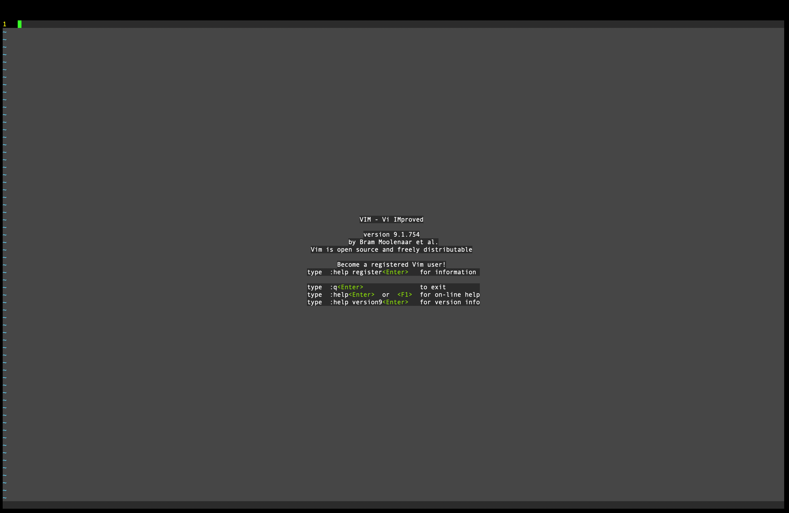

The first command you will ever use is vim.
You will see a help page with all of the commands. One of the most important commands you will use is :q.
When you open vim, it will put you in an editor. The way to get back to the terminal is by using :q.
Doing vim [file] will let you edit a file. There are 3 main modes.
When you are done editing, you may want to save all of your work (unless you made a big oopsie).
Use :write while in View mode to save your work.
After saving your work, you may either stay or leave the editor. To leave the editor, type in
the command :q. If you forget to save your work, it will give you a warning. But
if you still want to delete all of your progress, you can add ! in front of the
command to override the warning.
Vimrc is a configuration file for making your vim look pretty neat. Here is an example file
syntax enable - Cool syntax colorsfiletype indent on - Enables automatic indentset background=dark - Makes the background darkcolorscheme desert - Makes your syntax color scheme desert-themedset number - Makes the - symbol on the left numberedset relativenumber - Makes all the numbers near your line rerelative to your current line (helps with line by line surfing)